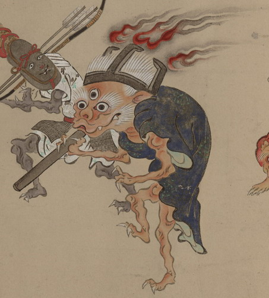

五徳をかぶった三つ目の化物。藍色の衣を身にまとい、白い髪を逆立てている。頭上では炎が燃えている。火吹竹らしきものを吹いており、手足の爪は鋭い。
出典：親書誌：U426_nichibunken_0154：妖怪絵巻；ヨウカイエマキ／日付：2010／資源識別子：U426_nichibunken_0154_0046_0000
Copyright (c)2010- International Research Center for Japanese Studies, Kyoto, Japan. All rights reserved.